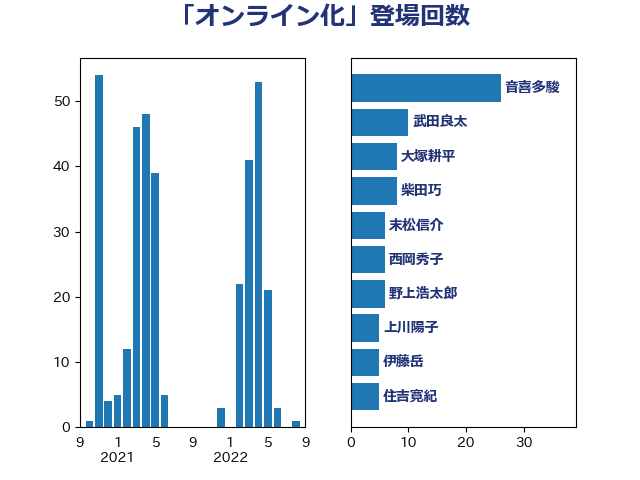

単語「オンライン化」

| 音喜多駿 | 日本維新の会 | 26 回 |
| 武田良太 | 自由民主党 | 10 回 |
| 大塚耕平 | 国民民主党 | 8 回 |
| 柴田巧 | 日本維新の会 | 8 回 |
| 末松信介 | 自由民主党 | 6 回 |
| 西岡秀子 | 国民民主党 | 6 回 |
| 野上浩太郎 | 自由民主党 | 6 回 |
| 上川陽子 | 自由民主党 | 5 回 |
| 伊藤岳 | 日本共産党 | 5 回 |
| 住吉寛紀 | 日本維新の会 | 5 回 |
| 田村憲久 | 自由民主党 | 5 回 |
| 塩田博昭 | 公明党 | 4 回 |
| 田名部匡代 | 立憲民主党 | 4 回 |
| 田畑裕明 | 自由民主党 | 4 回 |
| 緑川貴士 | 立憲民主党 | 4 回 |
| 遠藤良太 | 日本維新の会 | 4 回 |
| 野田聖子 | 自由民主党 | 4 回 |
| 和田義明 | 自由民主党 | 3 回 |
| 安江伸夫 | 公明党 | 3 回 |
| 宮路拓馬 | 自由民主党 | 3 回 |
| 川田龍平 | 立憲民主党 | 3 回 |
| 後藤茂之 | 自由民主党 | 3 回 |
| 片山大介 | 日本維新の会 | 3 回 |
| 田島麻衣子 | 立憲民主党 | 3 回 |
| 西村康稔 | 自由民主党 | 3 回 |
| 赤澤亮正 | 自由民主党 | 3 回 |
| 金子恭之 | 自由民主党 | 3 回 |
| 三木圭恵 | 日本維新の会 | 2 回 |
| 上野通子 | 自由民主党 | 2 回 |
| 中谷一馬 | 立憲民主党 | 2 回 |
| 後藤祐一 | 立憲民主党 | 2 回 |
| 斎藤嘉隆 | 立憲民主党 | 2 回 |
| 杉尾秀哉 | 立憲民主党 | 2 回 |
| 梶山弘志 | 自由民主党 | 2 回 |
| 江田憲司 | 立憲民主党 | 2 回 |
| 河野太郎 | 自由民主党 | 2 回 |
| 浜田聡 | NHK党 | 2 回 |
| 清水貴之 | 日本維新の会 | 2 回 |
| 熊谷裕人 | 立憲民主党 | 2 回 |
| 熊野正士 | 公明党 | 2 回 |
| 牧島かれん | 自由民主党 | 2 回 |
| 田所嘉徳 | 自由民主党 | 2 回 |
| 若松謙維 | 公明党 | 2 回 |
| 菅義偉 | 自由民主党 | 2 回 |
| 赤羽一嘉 | 公明党 | 2 回 |
| 足立康史 | 日本維新の会 | 2 回 |
| 高木かおり | 日本維新の会 | 2 回 |
| ながえ孝子 | 無所属 | 1 回 |
| 三原じゅん子 | 自由民主党 | 1 回 |
| 中曽根康隆 | 自由民主党 | 1 回 |
| 中野洋昌 | 公明党 | 1 回 |
| 井坂信彦 | 立憲民主党 | 1 回 |
| 佐藤啓 | 自由民主党 | 1 回 |
| 吉田宣弘 | 公明党 | 1 回 |
| 堀場幸子 | 日本維新の会 | 1 回 |
| 塩川鉄也 | 日本共産党 | 1 回 |
| 大口善徳 | 公明党 | 1 回 |
| 守島正 | 日本維新の会 | 1 回 |
| 安達澄 | 無所属 | 1 回 |
| 小林史明 | 自由民主党 | 1 回 |
| 小野田紀美 | 自由民主党 | 1 回 |
| 山本有二 | 自由民主党 | 1 回 |
| 山本香苗 | 公明党 | 1 回 |
| 山田賢司 | 自由民主党 | 1 回 |
| 岸田文雄 | 自由民主党 | 1 回 |
| 平井卓也 | 自由民主党 | 1 回 |
| 平将明 | 自由民主党 | 1 回 |
| 平木大作 | 公明党 | 1 回 |
| 平林晃 | 公明党 | 1 回 |
| 徳永久志 | 立憲民主党 | 1 回 |
| 打越さく良 | 立憲民主党 | 1 回 |
| 新谷正義 | 自由民主党 | 1 回 |
| 日下正喜 | 公明党 | 1 回 |
| 本田太郎 | 自由民主党 | 1 回 |
| 東徹 | 日本維新の会 | 1 回 |
| 武部新 | 自由民主党 | 1 回 |
| 浅野哲 | 国民民主党 | 1 回 |
| 猪口邦子 | 自由民主党 | 1 回 |
| 田村まみ | 国民民主党 | 1 回 |
| 石川博崇 | 公明党 | 1 回 |
| 礒崎哲史 | 国民民主党 | 1 回 |
| 笠井亮 | 日本共産党 | 1 回 |
| 萩生田光一 | 自由民主党 | 1 回 |
| 藤井比早之 | 自由民主党 | 1 回 |
| 藤巻健太 | 日本維新の会 | 1 回 |
| 高野光二郎 | 自由民主党 | 1 回 |
| 鳩山二郎 | 自由民主党 | 1 回 |